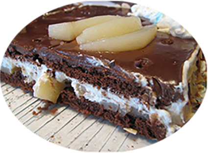

Poirier au chocolat

Pour 6 personnes
Préparation : 30 mn
Cuisson 20 mn
Repos 5 h
Ingrédients
Pour le biscuit au chocolat
- 4 oeufs
- 100 gr de sucre
- 70 gr de farine
- 40 gr de cacao amer en poudre
Pour la mousse poire
- 465 gr de poires au sirop égouttées
- 60 gr de sucre
- 3 feuilles de gélatine
- 3 feuilles de gélatine
- 20 cl de crème liquide entière
- 1 poignée d’amandes effilées grillées
Recette
Préparez le biscuit au chocolat
- Battez les oeufs entiers avec le sucre.
- Ajoutez la farine et le cacao tamisé ensemble.
- Mélanger à la spatule
- Préchauffer le four à 170°
- Etalez la pâte sur une plaque à pâtisserrie couverte de papier cuisson de façon que l'on puisse y découper 2 disques de pâte de 16 mm de diamètreenvirron
- Enfournez pour 10 à 15 mn
- Découpez ensuite 2 disques dans le bisquit
Préparez la mousse de poire
Voir la recette de la mousse poire
Procédez au montage
Badigeonnez les disques depâte avec le sirop de pores
Disposez un disque dans le fond du cercle (placé directement le cercle sur le plat de service)
Coupez le restant des poires en cube en réservant 2 demi (dans leur jus) pour le décor
Ajoutez les cubes sur le disque de pâte puis versez la mousse
Egalsez la surface puis recouvrez avec le second disque de pâte
Placez au réfrigérateur au moins 2 h
Au moment de servir retirer le cercle en glissant une lame de couteau à l'iltérieur pour décoller le bord
Décorez le dessus de lamelles de poire et d'amandes effilées
Pour les gourmand ajoutez de la chantilly
|